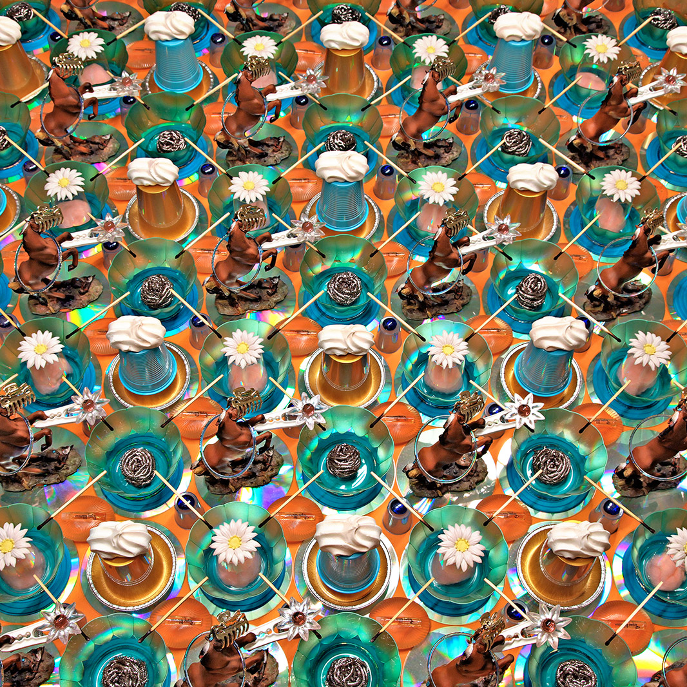
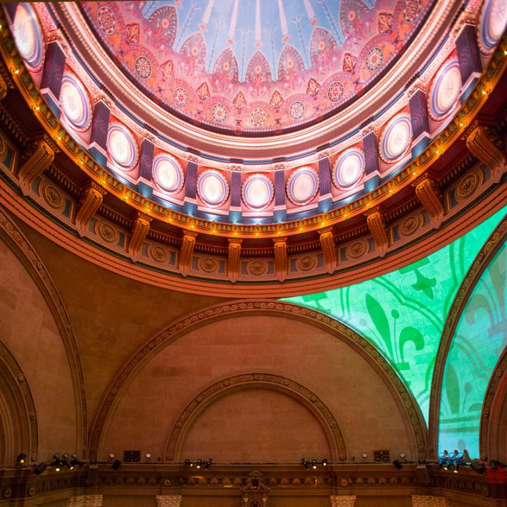
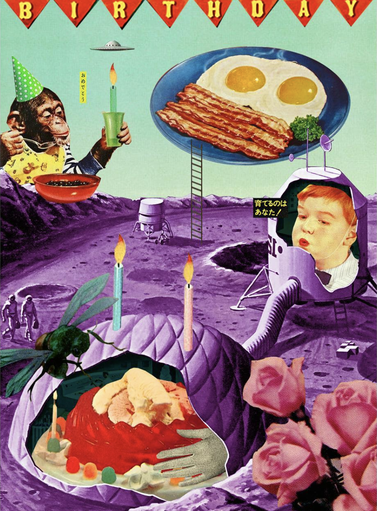

Questions
1. Where does luxury land on the scale of ethics?
2. Can luxury and social advocacy go hand-in-hand? Do we have to trade one for the other?
3.How can we create a balance between individual and communal needs/desires?
4. Does compromise have space in the landscape of community-engagement and development?
Readings
Dutch Female Founder Challenges The Leather Industry With Her Growing Brand
“It's an important industry to take on and show that it should be done in a much more sustainable way... It’s a very sustainable product. It gets a lot of flack these days because everybody's into vegan products, but it allows you to make things that you can use for years and years. In that sense, it’s very sustainable.”
This Forbes article by Esha Chhabra focuses on Paulien Wesselink who left her job at the UN to pursure a business in the leather industry. Her entire approach to the methods and process of processing and manufacturing leather is one of sustainability and consciousness. It differs from the approach of majority of the leather industry and creates an example of where the future of leather could possibly go.
This article is extremely interesting to me given the existing trend of vegan and vegetarian products. It discusses solutions besides faux-leather that would decrease the negative impact the leather industry can have.
Observations
National Geographic Encounter: Ocean Odyssey.
A new interactive exhibit at Times Square, New York, the Ocean Odyssey wants to take its guests on a journey of the deep sea and offer a rare opportunity to look and interact with the life of an underwater environment we could never reach on our own.
The concept of the deep sea is so exciting to me - how we don't truly know what's down there and how the life and environment underwater is so vastly separate from ours despite being on the exact same planet and system.
This makes the experience of deep-sea diving and underwater exploration truly accessible to all and can act not only as an educational tool for children, but also encourage them to explore beyond their world even more.
Images + Methods
Lightform Inc.
Project mapping to decorate and augment cakes and the wedding environment.
Herve Graumann
The Rockwell Group
QTA, collage artist